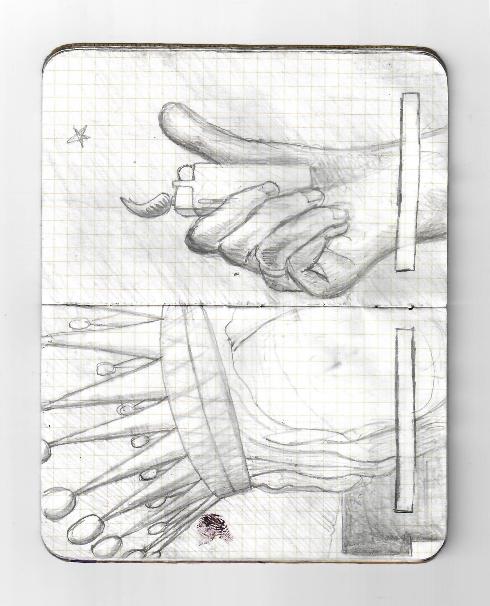
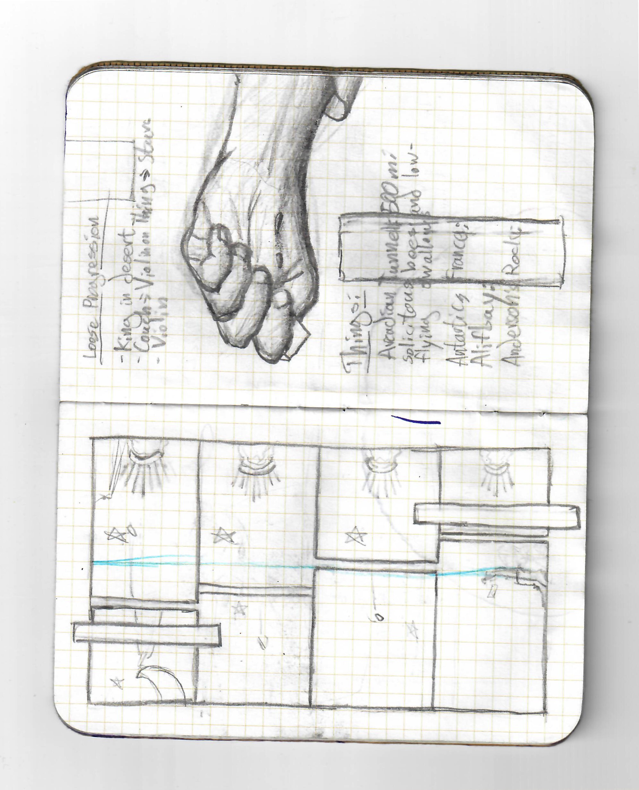

In the later months of 2022, I began making plans to make a comic about my physical education class. Around a month later, I stopped doing that.
I had a dream about a king ruling over an empty desert, and something about the imagery stuck with me.


I made a lot more pages in a more fancy way, which took a long time. Now there's a comic. The highlights of the process were: